layout: true <div class="acquia-header"></div> <div class="acquia-footer"><span>Emily Slocombe and Pim van der Wal</span></div> --- class: center, middle name: section-begin # Drupal just wants to # _hug_ # your database --- class: center, middle name: section-begin  # And by _hug_ -- I mean bodyslam ??? Drupal can really abuse a database --- class: center, top, toc ## Table of Contents | | | -------------------------- | | What is Drupal? | | Top complaints | | MySQL at Acquia | | Caching | | Drupal things | | Common tables | | Common issues | | Your role | ??? stuff --- ## What is Drupal? * a Content Management System * you probably have been on a drupal site, today even * https://www.drupal.com/showcases .center[] ??? GET NEW SCREENSHOT ! As a very flexible CMS, it can either be really lean or bloated with modules. We host thousands of Drupal sites, and they all look and perform very differently from each other. * contrib and core modules. Sites are basically completely changed with how they look and run --- ## Drupal versions * Initial release in 2000 * Drupal 6 (2008) * Drupal 7 (2011) * Drupal 8 (2015) ??? * Drupal 8 was released very recently. Most of the sites we host are on version 7. * Acquia still hosts Drupal 6, 7 and 8 sites. --- ## Top complaints * bad queries * 'views' * misinformation ??? * Bad queries, like those generated by views * When people hear that I work with Drupal and they are aware at all of what the queries can look like, I often get semi-disgusted responses. Drupal views is a query builder and it doesn't always build the most beautiful queries. * I also had one person 'inform me' that Drupal couldn't use InnoDB -- telling me the story of how their site broke when they tried. Whatever happened for them, completely ruined their opinion of Drupal. I've been with Drupal since version 5, and I can safely say I have never had it 'not work' on InnoDB. --- ## MySQL at Acquia * all AWS EC2 * Percona Server 5.5 (working on upgrades) * EBS backed MySQL (slowww disks) * master-master (active-passive) * dns-based failover * thousands of db servers, 2.3 DBAs ??? * we are running with only one active in the master-master pair * the dbs's are part of the operations team. * the sites we run range from super small from like the 'librarians of nebraska fan site' to huge like major media news sites and I just made up that nebraska thing --- ## Caching * Always avoid the database - < drupal 8 defaults to no caching. Enable page cache - all caching defaults to in-database - use memcached for cache backend * Cache layers at Acquia: .center[] ??? * The biggest performance tip is 'Caching' * Drupal basically loads websites from the database. Cache more, hit the database less. * caching exists at each layer of the diagram --- ## Drupal things * Views * Blocks * Panels * Modules * Custom fields ??? * these are the basic components of a drupal web page. --- ## Drupal things: a page  ??? * here is a recent version of the acquia dot com page --- ## Drupal things: a page  ??? * here are those basic drupal components on the acquia dot com web page --- ## Drupal things - Views Module * Views is essentially a query builder * Part of Drupal Core * Allows non-programmers to generate SQL queries * Defaults to left joins * Views can use other views (sub queries) ??? there should be an example on the next slide of a views-style query with left joins... the classic... pagination! --- ## Drupal things - Views * Pagination hurts  ??? * Subquery * 3 left joins * No limit --- ## Drupal things - Views * Pagination hurts - Views Litepager (https://www.drupal.org/project/views_litepager) - Views Load More (https://www.drupal.org/project/views_load_more) ??? Both modules do not show a count and do not allow to go to last page. --- ## Drupal things - Variables * Drupal configuration table * Always cached * Variable contention  ??? * Drupal variables are cached so a cache clear and lead each thread to recache the entire variable table * Modules store aggregate js or css hash in variable table but if that is different per page it will get continuously updated TODO: discuss this last one with Mark S --- ## Drupal things - Variables * Cache stampede<br> .center[] ??? advance to the next slide before everyone gets vertigo! --- ## Drupal things - Variables * Cache stampede<br> https://www.drupal.org/project/variables_that_suck_less ??? A cache clear causes the entire vaariable table to be loaded into cache. --- ## Drupal things - Custom fields * Drupal 6: Custom fields grouped together in tables * Drupal 7: A separate table per custom field * Drupal 8: A separate table per custom field ??? Drupal 7 allows separate database engines to be used for custom fields. Drupal 8 does not since it wasn't being used. --- ## Drupal things - Custom fields Drupal 7 and 8: * Each custom field is stored in a separate table * Updating 10 custom fields mean updating 10 records * Lots of joins  --- ## Common tables - Drupal 8 ERD <img src="Drupal8_UPsitesWeb_Schema_10-19-2013.png" style="width: 100%;"/> ??? * this was how I tried to learn drupal back when I was at Nokia 6 or 7 years ago * there are no foreign keys * Joins are based on fake foreign keys! --- ## Common tables * cache* * cache_form * field_* * field_revision* * node * semaphore * variable * watchdog --- ## Common tables * cache* -> memcached * cache_form -> possibly compression * field_* * field_revision* * node * semaphore -> sometimes memcached * variable -> investigate contents * watchdog -> send to file ??? * cache_form records get way too big. Fixed in d8, working on a fix to d7 * watchdog not necessarily bad, but there a lot of customers that write every lasy bit of info, so it can get too much traffic. --- ## Common tables - cache_form * cache_form table stores state between pages - Filters, shopping cart, etc. * Views store the views object - In Drupal 7 they can add too much data, fixed in Drupal 8 * Compression sometimes helps * Drupal cron purge needs to run ??? * One customer wrote 1.3MB per cache_form record for each page visit. This contained a pre-generated filter for videos. * Compression can help reduce the disk I/O for large records. Not a huge gain in general. * Purge job choice between running frequently and causing locking issues or infrequent (once per day) and taking hours to run on busy sites. --- ## Common tables  ??? many of our customers use New Relic. Here, they might choose to blame the database for a performance issue. --- .center[] --- ## Common tables  ??? Here we see, perhaps, cache_form is having trouble --- ## Common issues - Capacity * CPU / memory => EC2 instance upsize - Bigger InnoDB buffer pool - More CPU cores<p> * Disk I/O issues - InnoDB log file size - Hard limit of disk I/O capacity ??? * CPU cores are limited to what the version of MySQL supports * Log file size mostly addresses peak usage and not sustained higher usage --- ## Common issues - Furious flushing 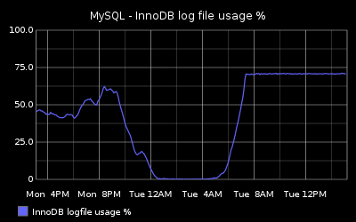 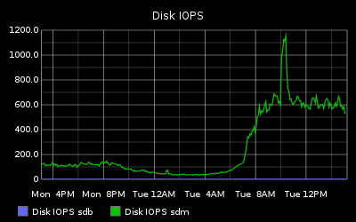 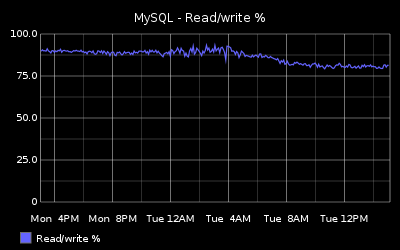 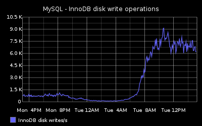 ??? * Yes, 600 IOPS is non-RAID spinning rust EBS --- ## Common issues - Query Cache 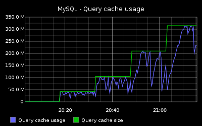 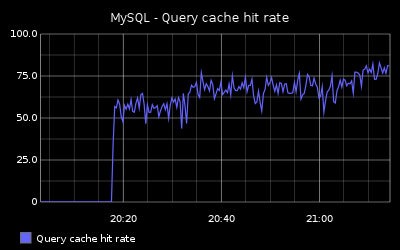 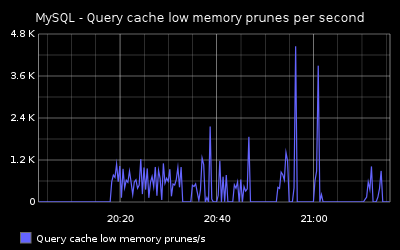 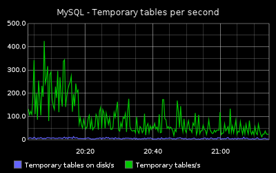 ??? * Drupal is supposed to be mostly reads, most customers have 99% reads --- ## Common issues - Query Cache 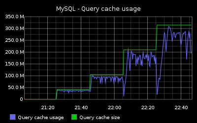 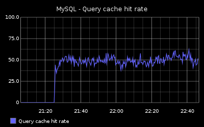 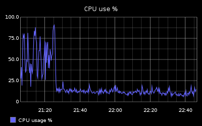 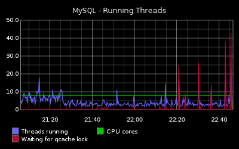 --- ## Common issues - Long Transactions 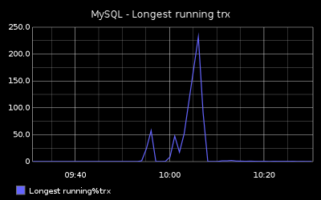 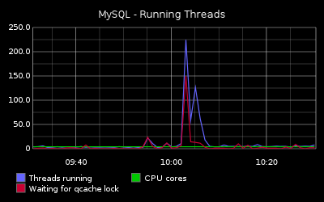 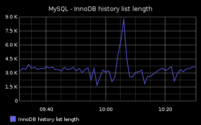 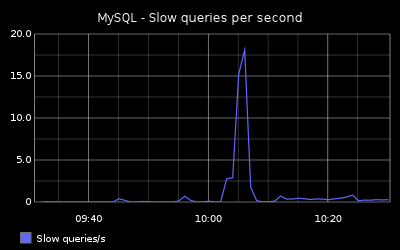 --- ## Common issues: Traffic * deploy with cache clear (drush cc all) * crawlers * lots of admin edits * user registrations / auth traffic * query cache ??? * due to the nature of drupal, certain types of traffic tend to bypass caches and go straight to the db --- ## Common issues: Traffic  --- ## Common issues: Traffic * deploy with cache clear (drush cc all) - maint mode * crawlers - deflect upstream * lots of admin edits -> semaphore, *revision - perhaps make an edit web node, reserved * user registrations / auth traffic - fix everything and scale * query cache (watch throughput and thread status) - increase - yes, really, sometimes. - zero + mutex --- ## Your role  --- ## Your role * not often fixing queries or adding indexes - it is code, we can't easily change code * monitor workload - statsd - new relic - whatever * provide useful feedback to developers - more than just slow queries * where are they being generated? --- class: left, bottom, chapter-header ### I am sure there are none. ## questions? --- class: left, bottom, chapter-header ### For not falling asleep ## Thank you! --- ## extra1 - cache_form cron fail  --- ## extra2 - cache_form crawler fail  <!--## Very Wise Words! #### .center[Make Sure Your Backup Architecture Meets Your Business Requirements] ##### .center[(so we never have to do a recovery)] -->